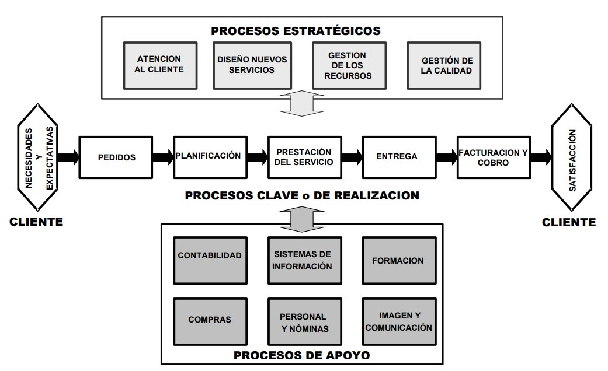

Tarea 1
Sistemas y procesos
Investigue y elabore una matriz de definiciones (tomando en cuenta al autor, de los conceptos de: sistema, proceso, elementos del proceso. Jerarquía y clasificación de procesos (mínimo dos autores por concepto).
Características
La gestión por procesos se caracteriza por un sistema interrelacionado de procesos que contribuye a incrementar la satisfacción del cliente, ya que elimina las barreras entre diferentes áreas funcionales y unifica sus enfoques hacia las metas principales de la organización, permitiendo la apropiada gestión de las interfaces entre los distintos procesos. La gestión por procesos comenzó a tomar fuerza a partir de la reingeniería, y culminó con los principios propuestos en la serie de normas ISO 9000, donde el enfoque por procesos se considera “un camino poderoso para organizar y gestionar las actividades que crean valor en la empresa”.
Matriz de definiciones
| Concepto | Definiciones |
|---|---|
| Sistema |
|
| Proceso |
|
| Procesos operativos | Son aquellos en que los productos resultantes son recibidos por una
persona u organización externa a la organización. Constituyen la
secuencia de valor añadido con que la organización satisface las
necesidades de los clientes:
|
| Procesos de apoyo | Son aquellos esenciales para una gestión de los procesos operativos.
Como ejemplos tenemos:
|
| Procesos estratégicos | Son todas aquellas actividades realizadas por los gestores para mantener
los procesos de apoyo y los operativos. Entre ellas tenemos:
|
| Procesos de evaluación | Contempla los procesos que permiten dar seguimiento y control a la gestión institucional, contribuyendo en el análisis de la información generada por los procesos y apoyando la mejora continua. |